Web Design - Social Media
Language University
Managing LU's website since 2019 has shown me how to position a brand and its products for conversions.
LU is my oldest sister's small business which aims to teach Kindergarten through 3rd grade introductory Spanish through Fun - skits, games, songs, crafts, and other activities.
When the pandemic hit in 2020, I helped my sister reposition the company's focus towards the digital space by rethinking their messaging and website.
Building out the company's digital platform constantly challenges me to think about the user journey to ensure that products can be understood and accessed by their target persona when they reach the initial landing page.

Website Refresh: A Two Part Process
LU's Squarespace-based website is the company's hub for its three primary customer personas: parents, teachers, and school admin.
In my initial redesign of the website in 2019, I focused on improving the readability of the website by examining the page layouts, typefaces, and navigation. Some of the major wins from this process: reducing margin size, removing an unnecessary border around body content, and creating consistent styling for text and image based links.
Since 2021, I have been bringing the website to the next level by creating a more engaging visual brand for the website and rethinking the user flow towards their appropriate offerings, whether that process be completed through the website or personalized correspondence with the LU team.
A major improvement in the second refresh effort was separating the text-heavy Offerings page into two pages (For Families vs For Schools) that funnel users towards the programs that are applicable to their needs.
Site Hierarchy Map
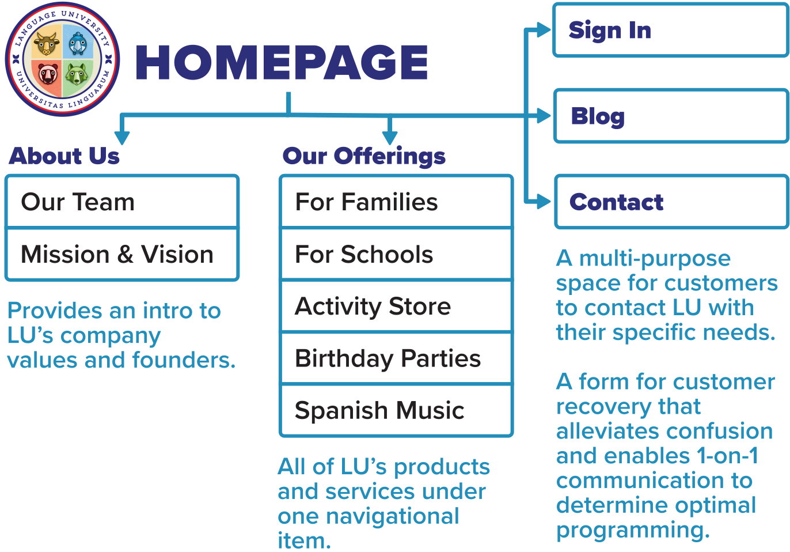Homepage
The landing page opens with a clean view of the nav bar, an announcement about the company's featured promotion, and the mascots.
The colorful, yet modern aesthetic of this splash section visually aids in the presentation of the "Language through Fun" pedagogy, which the company embodies in all of its programming.
As the user scrolls down, they are met with an animated descriptor of "Language through Fun" and subsequent buttons that direct users towards the programs for schools vs families.
In the event that users do not click these funneling buttons, they are able to learn more about the company's digital and in-person programs and view content from social media.
Lastly, a "Meet Language U" button follows the user down the page in case the user wants to schedule a Calendly meeting to learn more instead of exploring the website further.
Homepage at Project Start
The previous homepage iteration feels text heavy and rather monotonous. This is seen in the long type setting and the overly consistent screen width that the content takes up.
For Schools & For Parents
These pages present the programming that is specific to the two major persona umbrellas- schools (admin and teachers) vs families.
Each page starts with a banner and headline text to visually and textually reinforce the purpose of the page in a succinct manner.
One of the major wins of the second refresh effort was using Cards and Stack elements that present each program with an image and text descriptor, as well as a clear call to action button to learn more about the program.
Additionally, I included more images and paired down text to keep the pages engaging. I also wanted to divide the pages into clear sections to help readability and presentation of content.
Offerings Page at Project Start
This Offerings page from the previous refresh suffers from text heavy organization and lack of imagery.
It does not present programs by persona, but rather by digital, year round, and summer programs. This means that users will have to waste time reading about programs that are not applicable to their specific needs and interests.
Products
Each of the major digital services have their own info page with the important details, graphics, and videos associated with the program. There are also clear call to action buttons to enable users to inquire or purchase the products they are reading about.
Contact Workflow
For some programs, such as birthday parties and the digital curriculum, users can not purchase the products without first corresponding with the LU team. For these, users are funneled towards the Contact page, where they can fill out a form to receive more information based on their request.
Social Media Graphics
Starting in 2020, I also managed Language University's Facebook and Instagram. I crafted a mixture of branded graphics to convey important information and video content of the students engaging with the company's classes.
These social media posts helped to establish a voice for the company's social media as a foreign language education brand that pairs learning with laughter and cares about educators and parents.
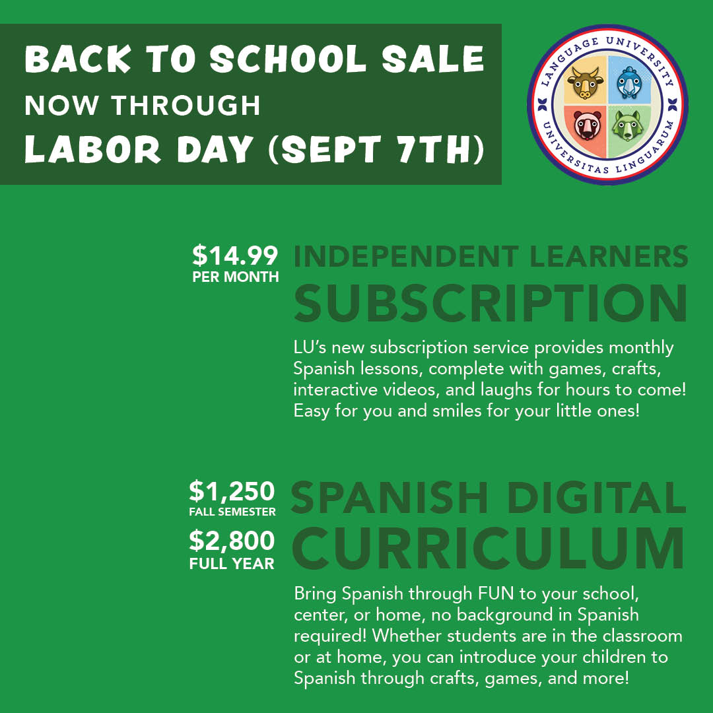
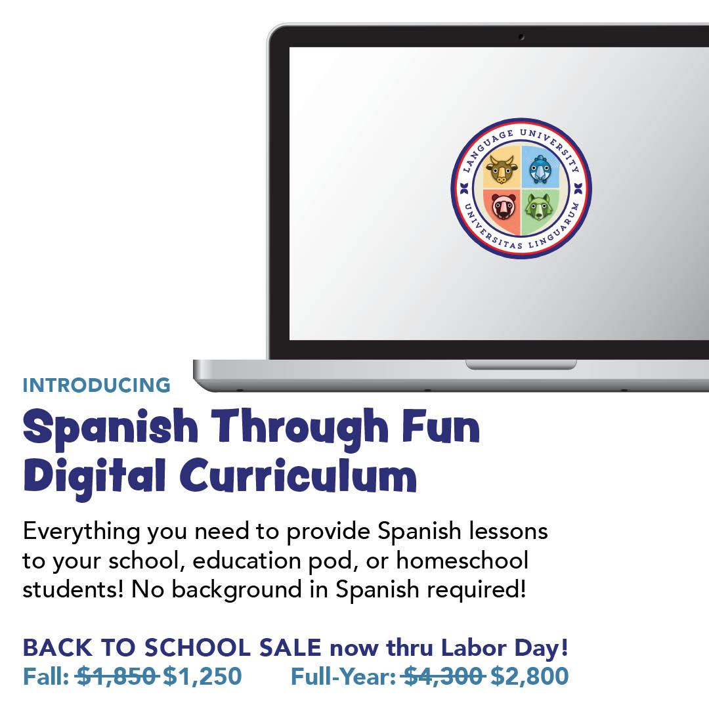
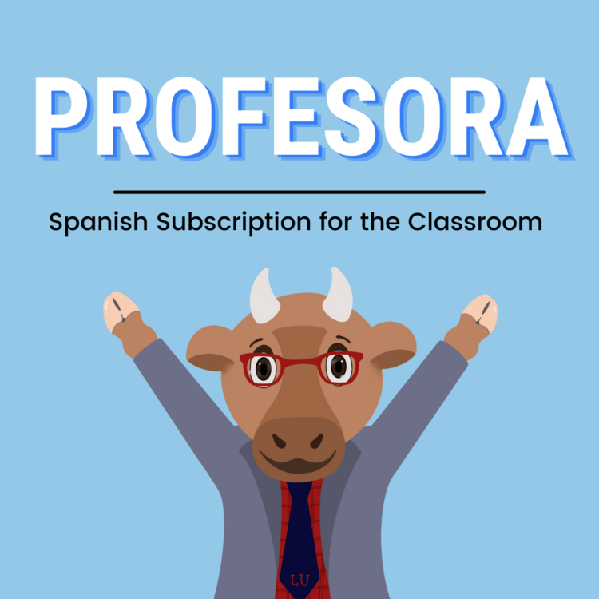
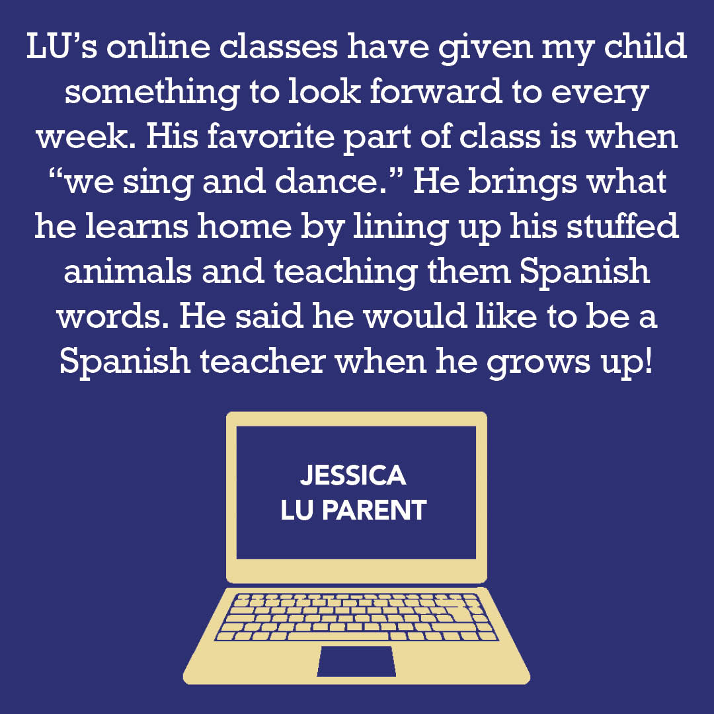
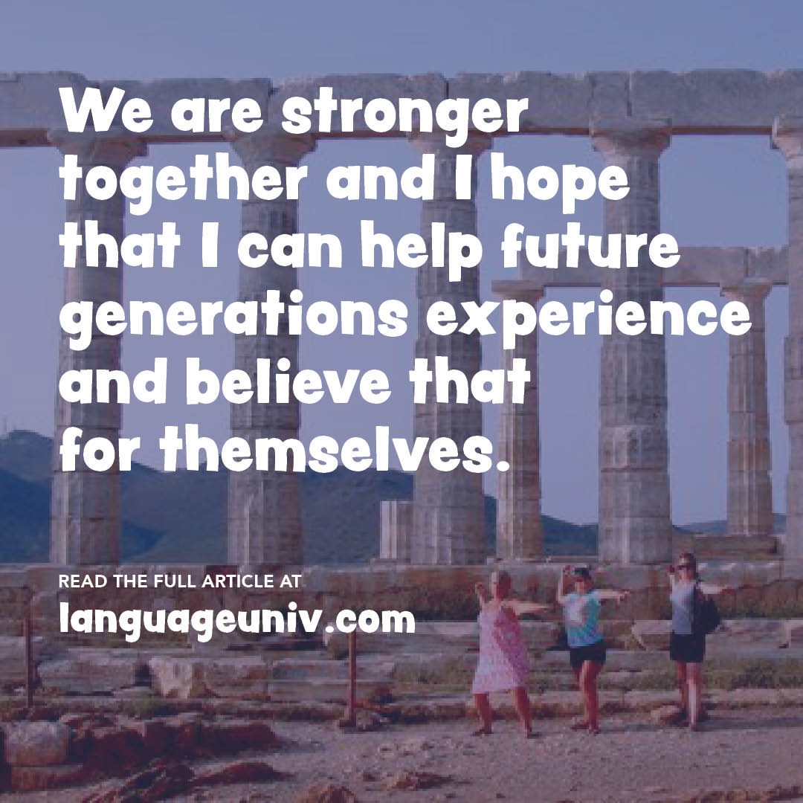
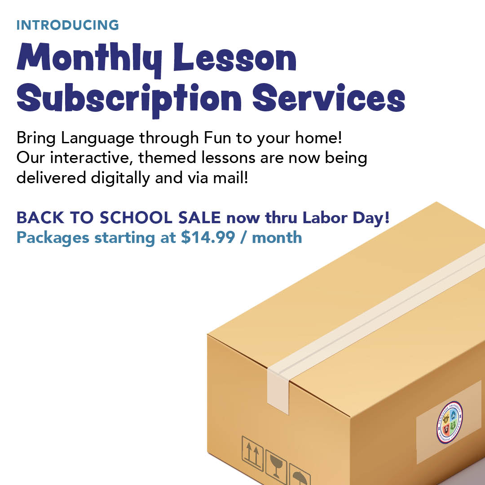
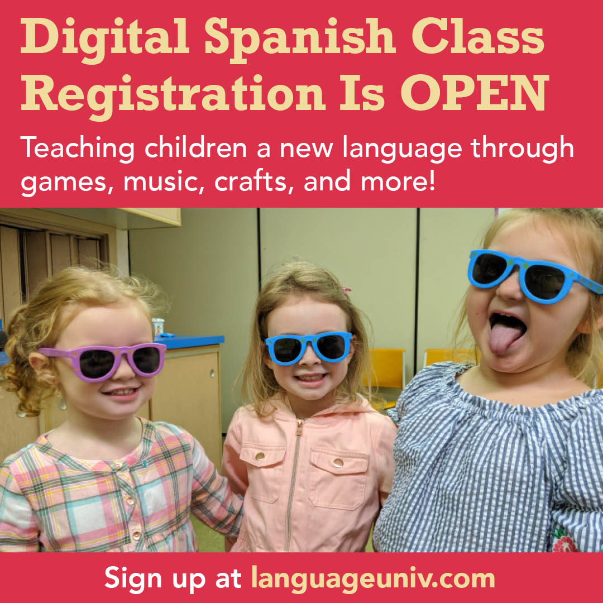
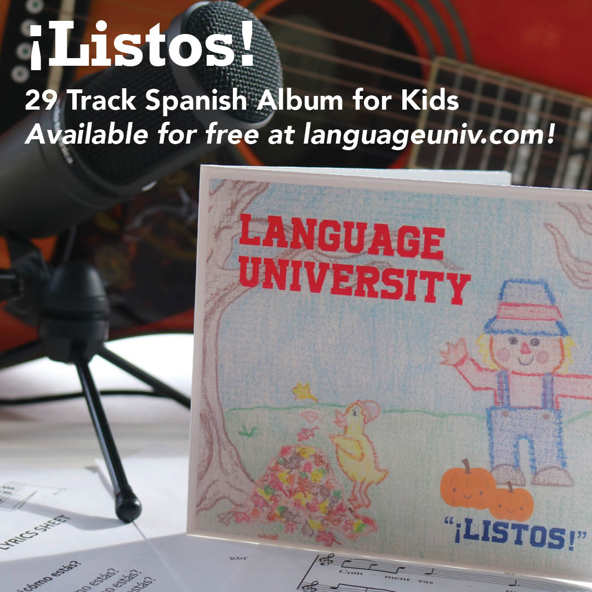
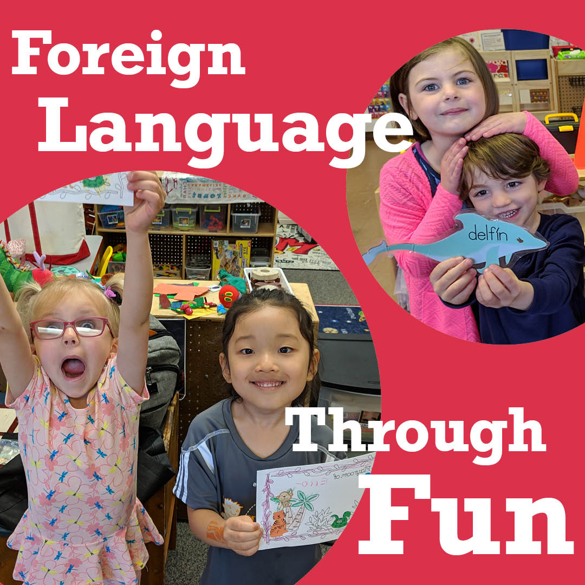
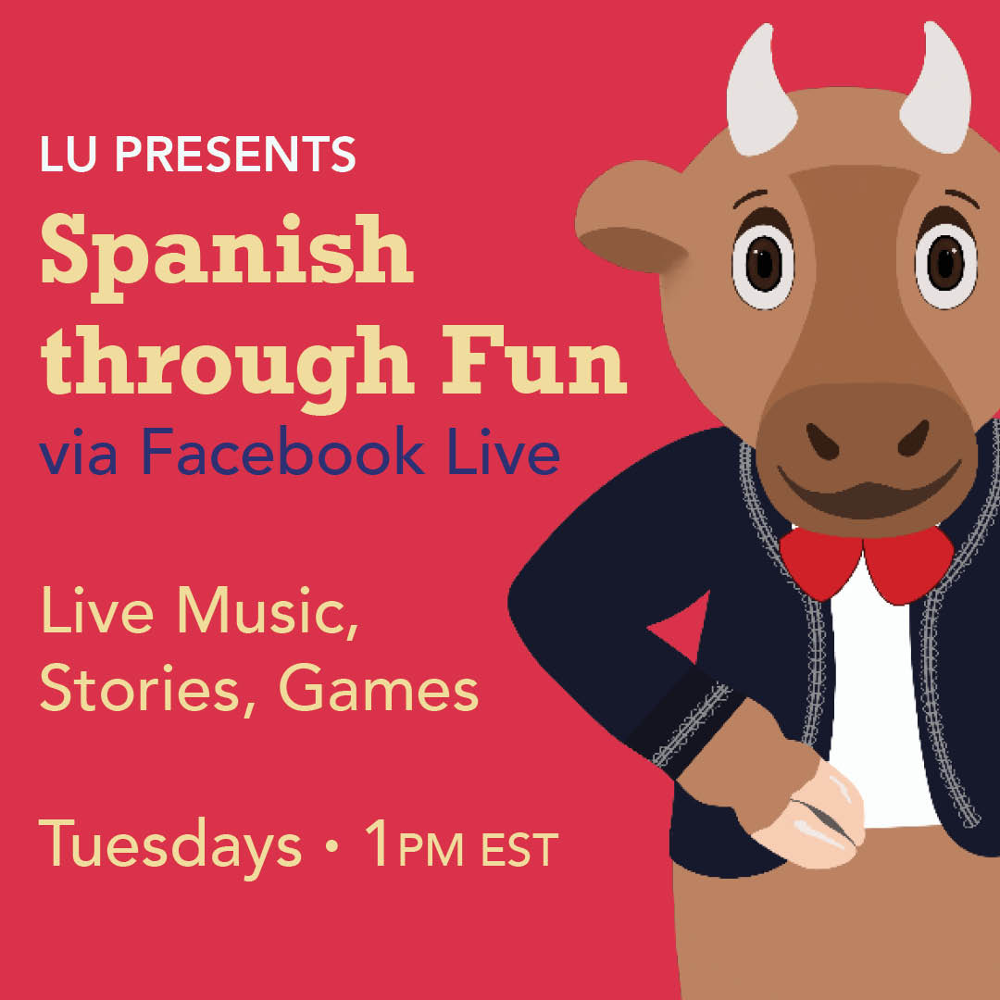
Language University Lyric Videos
In an effort to build out LU's Youtube channel, I created karaoke music videos for two songs from their Spanish for kids album Listos. Editing the videos in Premiere Pro, I employed key frames to display each song's lyrics in a karaoke format that kept up with the pace of the song.